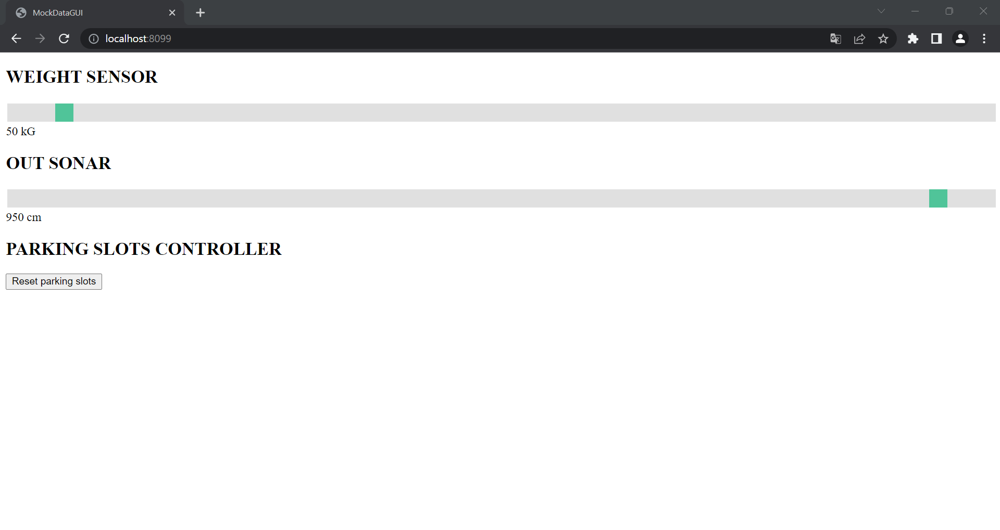

Introduction
Requirements
Requirement analysis
First Problem Analysis
Sprint 1
Sprint 2
Sprint Backlog
Car Pick Up
The goals of this sprint are the following:| Description | Requirements |
|---|---|
| The outSonar is able to detect the presence of a car in the outdoor area. | F17, NF2 |
| The system is able to manage a pick up car request. | F6, F7, F8, F9 |
| The system is able to notify about the DTFREE time limit in the outdoor area. | F15 (partially) |
| The system provides the ParkServiceGUI to handle the client's car pick up requests. | F6, F9 |
| The status of the system must survive after a system reboot. | NF3 |
| Should be possible to analyze the behaviour of the system. | NF4 |
Summary
Problem Analysis
General Considerations and Starting Point
For this third sprint, the initial logical architecture is:{kind=link}

This sprint will be focused on Car Pick Up action. So it will cover the Business Logic** and the Transport Trolley section that interacts with it, in addition to the Out Sonar part. It will also provide a final Park Service GUI.
We refer to "Business Logic**" as the remaining part of the Business Logic that does not involve the transport trolley actor, the Indoor Controller actor and the Parking Slot Controller actor.
Introduction
- the user expresses his interest in picking up his car from the PMS, sending the tokenid received during the car park phase (a "car_pick_up request" will be associated to this action);
- The PMS checks, thanks to the Parking Slot Controller, if the TOKENID is correct ("validate_tokenid request")
- if the TOKENID is valid ("valid_tokenid reply"), the PMS uses the transport trolley to take the car to the outdoor area. When the out sonar detects that car, the PMS informs the user ("accept_out_success" reply) that he can take his car away.
Out Sonar Analysis
- if the transport trolley has actually release a car in the outdoor area;
- if the user has actually taken the car from the outdoor area.
In the case of a virtual out sonar, it is necessary to have a 'mock' interface that allows you to check and modify the value of the out sonar at any time.
It was also decided to insert no logic inside the out sonar in order to make it as reusable as possible: the out sonar is therefore limited only and exclusively to measure the distance.
The outsonar is model as a
Observable State
Outdoor Controller and Park Service Controller
Outdoor Controller Analysis
Our domain contains a single Outdoor Area. However, thanks to the Transport Trolley Communication Protocol flexibility is possible to add new Outdoor Area in the future. For this reason at each Outdoor Area should be assigned a unique DOOR NAME that is mapped to a given position in the parking area map (known by the Transport Trolley). So, each Outdoor Controller is associated to a single Outdoor Area characterized by its unique DOOR NAME; this DOOR NAME is used during the car pick up phase to move the Transport Trolley to the correct outdoor area.
Since our domain contains a single Outdoor Area the prototype will have a single Outdoor Controller.
To the Outdoor Controller is associated a status that coincides with the current status of the Outdoor Area: free, reserved or occupied.
- free: it means that currently the outsonar is not being observed (and therefore it is assumed that the outdoor area is free);
- reserved: it means that currently the Outdoor Controller is handling a car pick up request, but the out sonar is either not observed or measures a distance greater than or equal to DMIN;
- occupied: the outdoor area is occupied by a car (the out sonar measure a distance lower than DMIN).
The Outdoor Controller has been modeled as
In particular it interacts with the Parking Slot Controller to validate the TOKENID, received from the user, and to free a parking slot.
- a
validate_tokenid request is made at the moment that acar_pick_up request is received.
There can be two possible cases:- valid_tokenid reply: the car pick up phase continue regurarly, the transport trolley handles the car pick up task and, when the car is detected in the outdoor area, the Outdoor Controller will send an accept_out_success reply to the user.
- invalid_tokenid reply: the car pick up phase ends with failure. An accept_out_failure response is sent immediately from the Outdoor Controller to the user.
- a
free_parking_slot dispatch is sent at the moment the TOKENID received from the user is valid and the transport trolley takes over the car from the parking slot.
Timer
From requirements, it is necessary to use a timer in a specific situation, to limit user misbehavior. This situation can occur when, after receiving an accept_out_success response, the user does not take the car from the outdoor area.To avoid this case, a
In case the timer goes off/rings, the manager must be notified and he has to intervene to help the user to take over the car.
Note: the notification to the manager must remain asserted until the situation is resolved.
For the DTFREE timer, it can be used the watchdog utility created and used in the sprint 1.
Assumptions
Despite the presence of a timer, some assumptions are necessary for a correct system behavior:- it is assumed that the user is not allowed to take the car from the outdoor area until he receives an accept_out_success response;
- it is assumed that the outdoor area cannot be occupied by anything other than a car managed by the PMS.
Limitations
Since in our domain there is only one transport trolley the car pick up and car park requests must be handle sequentially. Moreover at most one car is allowed to stay in the Outdoor Area in a given moment.Out sonar observation
In particular, the Outdoor Controller can start to observe the out sonar when the transport trolley releases a car in the outdoor area and stop it when the car exits from the outdoor area (with or without the manager's help).
This process can save the system from a lot of useless interactions and optimize the use of the available bandwidth (e.g. during the "idle" phase between two Car Pick Up requests the outsonar is not observed and this leads our system to consume less bandwidth).
Transport trolley communication
Startup Configuration
- DMIN: distance threshold. If the distance detected by the out sonar is lower than DMIN, it means that a car is inside the outdoor area;
- DTFREE duration: duration of the DTFREE timer;
- DOOR NAME: the name of the outdoor area as explained above.
Observable state
The information that has to be observable must contain the status of the outdoor area (free, reserved, occupied) and a flag that is asserted since the DTFREE timeout expires to the moment a proper action is taken.
Park Service Controller Analysis
In this way, the Park Service GUI has to communicate only with the Park Service Controller, that will propagate the messages (in both directions) to the appropriate entities.
The Park Service Controller has been modeled as a
Parking Slot Controller Analysis
About Observation
As analysts, we suggest to use JSON as data format, to improve the interaction and the communication, as we indicated also for the sprint 2. Moreover, thanks to Gson or Jackson libraries there's no abstraction gap.
Park Service GUI
The same considerations made in the Sprint 2 apply here.
In particular, the TOKENID persistence is important for the car pick up interface, because it permits to auto-fill the input text field with the last registered TOKENID. In this way, the user is partially relieved of the burden of remembering it.
However, the GUI must give the user the opportunity to insert/change manually the TOKENID (e.g. in case he opens the Park Service GUI from a different device).
Mock Data GUI
This GUI is not specified as a requirement and it is useless in case of a finished product with all real sensors. For that reason no in-depth analysis will be performed.
Security Considerations
Interactions
Parking Slot Status
This is a
Every status change is triggered by a specific message sent by the Indoor/Outdoor Controller to the Parking Slot Controller.
Machine Readable Model
/** * ================================== * ================================== | CLIENT ASKS TO ENTER IN INDOOR AREA [available parking slot] * ================================== * client using parkservicegui | request parking_car_interest(X) to parkservicecontroller * | * parkservicecontroller | request parking_car_interest(X) to indoorcontroller * | * indoorcontroller | observe weightsensor * | -- wait until measured weight in indoor area is lower than or equal to a given WMAX threshold -- * | request reserve_parking_slot(X) to parkingslotscontroller * | -- set indoor area reserved -- * | * parkingslotscontroller | replyTo reserve_parking_slot with parking_slot_reserved(SLOTNUM,TOKENID) * | * indoorcontroller | -- save received SLOTNUM -- * | -- save received TOKENID -- * | start dtoccupied timer * | replyTo parking_car_interest with inform_in(SLOTNUM) * | * parkservicecontroller | replyTo parking_car_interest with inform_in(SLOTNUM) * | * indoorcontroller | -- wait until measured weight in indoor area is greater than a given WMAX threshold -- * | stop dtoccupied timer * | start dtcarenter timer * | -- set indoor area engaged by car -- * * ================================== * ================================== | CLIENT ASKS TO ENTER IN INDOOR AREA [unavailable parking slot] * ================================== * client using parkservicegui | request parking_car_interest(X) to parkservicecontroller * | * parkservicecontroller | request parking_car_interest(X) to indoorcontroller * | * indoorcontroller | observe weightsensor * | -- set indoor area reserved -- * | -- wait until measured weight in indoor area is lower than or equal to a given WMAX threshold -- * | request reserve_parking_slot(X) to parkingslotscontroller * | * parkingslotscontroller | replyTo reserve_parking_slot with no_available_parking_slots(X) * | * indoorcontroller | replyTo parking_car_interest with inform_in(0) * | cancel weightsensor observation * | -- set indoor area free -- * | * parkservicecontroller | replyTo parking_car_interest with inform_in(0) * * ================================== * ================================== | CLIENT ASKS TO ENTER IN PARKING AREA [indoor area free] * ================================== * client using parkservicegui | request car_enter(SLOTNUM) to parkservicecontroller * | * parkservicecontroller | request car_enter(SLOTNUM) to indoorcontroller * | * indoorcontroller | replyTo car_enter with response_car_enter(IndoorAreaNotReserved) * | * parkservicecontroller | replyTo car_enter with response_car_enter(IndoorAreaNotReserved) * * ================================== * ================================== | CLIENT ASKS TO ENTER IN PARKING AREA [indoor area reserved - weight <= WMAX] * ================================== * client using parkservicegui | request car_enter(SLOTNUM) to parkservicecontroller * | * parkservicecontroller | request car_enter(SLOTNUM) to indoorcontroller * | * indoorcontroller | replyTo car_enter with response_car_enter(IndoorAreaNotEngagedByCar) * | * parkservicecontroller | replyTo car_enter with response_car_enter(IndoorAreaNotEngagedByCar) * | * * ================================== * ================================== | CLIENT ASKS TO ENTER IN PARKING AREA [invalid slotnum - indoor area engaged by car] * ================================== * client using parkservicegui | request car_enter(SLOTNUM) to parkservicecontroller * | * parkservicecontroller | request car_enter(SLOTNUM) to indoorcontroller * | * indoorcontroller | replyTo car_enter with response_car_enter(InvalidSlotnum) * | * parkservicecontroller | replyTo car_enter with response_car_enter(InvalidSlotnum) * | * ================================== * ================================== | CLIENT ASKS TO ENTER IN PARKING AREA [valid slotnum - indoor area engaged by car] * ================================== * client using parkservicegui | request car_enter(SLOTNUM) to indoorcontroller * | * indoorcontroller | stop dtcarenter timer * | -- disable dtcarenter alarm if enabled -- * | [transporttrolley DSL] takeOverCar at INDOOR * | replyTo car_enter with response_car_enter(TOKENID) * | -- set indoor area free -- * | cancel weightsensor observation * | * parkservicecontroller | replyTo car_enter with response_car_enter(TOKENID) * | * indoorcontroller | [transporttrolley DSL] releaseCar at SLOTNUM * | forward confirm_parking_slot(SLOTNUM, TOKENID) to parkingslotscontroller * | * parkingslotscontroller | -- move parking slot SLOTNUM from status RESERVED to OCCUPIED -- * | -- persist information about occupied parking slot SLOTNUM mapped to tokenid TOKENID -- * * ================================== * ================================== | ROUTINE CAR EXITS FROM INDOOR AREA * ================================== * indoorcontroller | stop dtcarenter timer * | cancel weightsensor observation * | -- set indoor area free -- * | -- disable dtcarenter alarm if enabled -- * | forward undone_reservation(SLOTNUM, TOKENID) to parkingslotscontroller * * parkingslotscontroller | -- move parking slot SLOTNUM from status RESERVED to FREE -- * | -- persist information about free parking slot SLOTNUM -- * * ================================== * ================================== | ROUTINE DTOCCUPIED TIMEOUT * ================================== * indoorcontroller | stop dtoccupied timer * | -- set indoor area free -- * | cancel weightsensor observation * | forward undone_reservation(SLOTNUM, TOKENID) to parkingslotscontroller * | * parkingslotscontroller | -- move parking slot SLOTNUM from status RESERVED to FREE -- * | -- persist information about free parking slot SLOTNUM -- * * ================================== * ================================== | ROUTINE DTCARENTER TIMEOUT * ================================== * indoorcontroller | stop dtcarenter timer * | -- enable dtcarenter alarm -- * * ================================== * ================================== | ROUTINE WEIGHTSENSOR MEASURE WEIGHT * ================================== * weightsensor | received input_weight(W) * | update observers with new weight W * * ================================== * ================================== | CLIENT ASKS TO PICK UP THE CAR [invalid tokenid] * ================================== * client using parkservicegui | request car_pick_up(TOKENID) to parkservicecontroller * | * parkservicecontroller | request car_pick_up(TOKENID) to outdoorcontroller * | * outdoorcontroller | request validate_tokenid(TOKENID) to parkingslotscontroller * | -- set outdoor area reserved -- * | * parkingslotscontroller | replyTo validate_tokenid with invalid_tokenid(X) * | * outdoorcontroller | replyTo car_pick_up with accept_out_failure(X) * | -- set outdoor area free -- * | * parkservicecontroller | replyTo car_pick_up with accept_out_failure(X) * | * ================================== * ================================== | CLIENT ASKS TO PICK UP THE CAR [valid tokenid] * ================================== * client using parkservicegui | request car_pick_up(TOKENID) to parkservicecontroller * | * parkservicecontroller | request car_pick_up(TOKENID) to outdoorcontroller * | * outdoorcontroller | request validate_tokenid(TOKENID) to parkingslotscontroller * | -- set outdoor area reserved -- * | * parkingslotscontroller | replyTo validate_tokenid with valid_tokenid(SLOTNUM) * | * outdoorcontroller | [transporttrolley DSL] takeOverCar at SLOTNUM * | forward free_parking_slot(SLOTNUM, TOKENID) to parkingslotscontroller * | * parkingslotscontroller | -- move parking slot SLOTNUM from status OCCUPIED to FREE -- * | -- persist information about free parking slot SLOTNUM-- * | * outdoorcontroller | [transporttrolley DSL] releaseCar at OUTDOOR * | observe outsonar * | -- wait until the measured distance is lower than DMIN -- * | -- set outdoor area engaged by car -- * | start dtfree timer * | replyTo car_pick_up with accept_out_success(X) * | * parkservicecontroller | replyTo car_pick_up with accept_out_success(X) * | * ================================== * ================================== | ROUTINE CAR EXITS FROM OUTDOOR AREA (observed distance D >= DMIN) * ================================== * outdoorcontroller | stop dtfree timer * | cancel outsonar observation * | -- set outdoor area free -- * | -- disable dtfree alarm if enabled -- * * ================================== * ================================== | ROUTINE DTFREE TIMEOUT * ================================== * outdoorcontroller | stop dtfree timer * | -- enable dtfree alarm -- * * ================================== * ================================== | ROUTINE OUTSONAR MEASURE DISTANCE * ================================== * outsonar | received input_distance(D) * | update observers with new distance D * */
The QAK models can be found here
Logical Architecture
Test Plans
TestTripOneCar
- Description: A car enter in the parking-area and then exit from the parking-area.
-
Initial conditions:
- Empty indoor-area
- At least one parking-slot free.
- Empty outdoor-area.
- The transportTrolley is not stopped.
-
Expectations:
- The car enter in the parking-area.
- On pick up phase the TOKENID is valid and the car exits from the parking-area.
- Tested requirements: F1, F2, F3, F4, F5, F6, F7, F8, F9, F16, F17, F20, F21
TestInvalidTokenId
- Description: The client when asks to pick up the car receives an error due to an invalid TOKENID.
-
Initial conditions:
- The outdoor area is free.
-
Expectations:
- The TOKENID inserted by the client is not valid. The ParkServiceGUI shows to the client an error.
- Tested requirements: F6, F7, F8, F9
TestOccupiedOutdoorArea
- Description: The client waits for a reasonable amount of time a response from the ParkServiceGUI in order to pick up the car. This response does not arrive.
-
Initial conditions:
- The outdoor area is occupied.
- The transportTrolley is not stopped.
- The transportTrolley is not serving other requests.
-
Expectations:
- The client does not receive a response in 15 seconds.
- Tested requirements: F6, F7, F17
TestOutSonarDetectCar
- Description: The outSonar is able to detect when a car enter the outdoor area.
-
Initial conditions:
- The outdoor area is free.
-
Expectations:
- By observing the outdoorcontroller is noticed that the outdoor area becomes occupied (after the transport trolley released the car in the outdoor area).
- Tested requirements: F17
TestDtfreeAlarm
- Description: Check if the manager receives the alarm when a car stays in the outdoor area for more time than the DTFREE time limit.
-
Initial conditions:
- The outdoor area is free.
-
Expectations:
- After a car pick up request the car remains enough time in the outdoor area in order to receive the DTFREE alarm by means of outdoorcontroller status observation.
- Tested requirements: F15
Project
About OutSonar configurability
In this sprint the outsonar is a mock (virtual) one and the input distance is received by an external dispatch sent by the MockDataGUI. However, it is planned to deploy a final system that uses a real outsonar, so we decided to develop a small support able to handle both the real outsonar and the virtual (mock) outsonar. In particular, the class OutSonarSupport.kt can be
The system administrator can configure the system in order to use the virtual outsonar or the real one by tweak the mode parameter ("virtual" or "real") in the configuration file config_outsonar.json.
In both cases (virtual or real mode) the
In case of real outsonar the dispatch could be generated and sent in form of autoMsg() by a thread or coroutine internal to the outsonar. This autoMsg() should be sent by means of RealOutSonarSupport.kt (instantiated by the OutSonarSupport.kt) each time a new distance is measured in the Outdoor Area.
However, at the time of writing only the
About observable JSON status
The same considerations made here apply. The Kotlin data class Distance.kt contains the representation of the JSON status exposed by outsonar.
About outdoorcontroller
The outdoorcontroller is designed as an observable QActor. It interacts with the other entities in the same way as explained in the problem analysis. The system administrator can configure the outdoorcontroller by tweaking the parameters of the configuration file config_outdoor_area.json.
Notes:
- the parameter "doorName" (e.g. OUTDOOR) should be the same name of a position in the map known by the TransportTrolley actor.
- the parameter "DMIN" must be expressed in centimeters (cm)
- the parameter "DTFREE" must be expressed in milliseconds
About observable JSON status
The same considerations made here apply. The Kotlin data class OutdoorAreaStatus.kt contains the representation of the JSON status exposed by outdoorcontroller.
About parkservicecontroller
The parkservicecontroller is designed as a QActor. It acts like a small indirection layer between the ParkServiceGUI Web Server and the domain logic actors (indoorcontroller and outdoorcontroller). Its main behaviour is to propagate messages (in both directions) between the entities cited above. It also performs safety checks on the messages received from the Web Server in order to protect the car park/car pick up logic from malformed inputs.
About parkingslotscontroller
The considerations done in Sprint 2 are yet valid.
In this sprint the parkingslotscontroller QActor gained the "validate_tokenid" and "free_parking_slot" functionalities. The "validate_tokenid" (request) is sent by the outdoorcontroller when a car_pick_up request arrives and a valid_tokenid or invalid_tokenid response is returned. The "free_parking_slot" (dispatch) is sent by the outdoorcontroller when the transporttrolley takes over the car from the parking slot, this message triggers a parking slot status transition from OCCUPIED to FREE.
The new functionalities have been implemented mainly as new methods in the ParkingSlotController.kt singleton object.
About TokenID validation
To validate the TokenID a string comparison (character-by-character) is performed. The TokenID is valid only if one of the TokenIDs known by the parkingslotscontroller matches with it.
If the TokenID is valid, a "valid_tokenid" response is returned (with the associated SLOTNUM as payload), otherwise a "invalid_tokenid" response is returned.
About persistence
The same considerations made in Sprint 2 apply.
About observable JSON status
The same considerations made in Sprint 2 apply.
Considerations about observable JSON status
The considerations done in Sprint 2 are yet valid.
ParkServiceGUI Server
It is basically the same GUI/WebServer developed in Sprint 2. The difference are those relating to the communication with the parkservicecontroller QActor instead of indoorcontroller QActor. A new POST API (documented below) has been implemented to map the car pick up functionality to the parkservicecontroller car_pick_up request.
| POST API | Input | Output | Description |
|---|---|---|---|
| /car_pick_up | TokenID | Success/Failure | The client requests to pick up the car. The server responds with "ok" if the car pick up request has been successfully completed, otherwise a "failure" response is returned (e.g. the TokenID was not correct). |
ParkServiceGUI Client
The considerations done in Sprint 2 are yet valid. In this sprint the ParkServiceGUI gained the "Car Pick Up" functionality, so the GUI now presents a new welcome page where the user can choose between "Car Park" and "Car Pick Up". The Car Pick Up functionality lets the user to enter a TokenID or use the persistent one (stored after a successful car park request).
Below are reported some images related to the ParkServiceGUI.
| Welcome page. | Car Pick Up page. The user needs to insert the TokenID in the proper text box; the persistent one will be shown and used if not overridden by the user. | The car pick up has been completed, now the user should take the car from the outdoor area. |
MockDataGUI
It is basically the same GUI/WebServer developed in Sprint 2.
In this sprint we just added the possibility to send an
Below are reported some images related to the MockDataGUI.
|  |
|
The OUTSONAR "slider" can be used to set the distance to the desired value, which is shown below the slider itself. |
TransportTrolleyGUI
It is the same component, without additions, as explained in Sprint 2.
About security
Same considerations of Sprint 2.
About configuration files
| File Name | Description |
|---|---|
| systemoutsonar.pl |
Can be used to configure the listening port of the |
| config_outsonar.json | Contains the mode ("virtual" or "real") of the outsonar. |
| systembusinesslogic.pl |
Can be used to configure the hostname and port of the:
|
| config_outdoor_area.json | Contains the informations to properly configure the outdoor area as explained here. |
| application.properties |
Can be used to configure the hostname and port of the |
| application.properties |
Can be used to configure the hostname and port of the |
OutSonar QAK
The QAK below contains the implementation of the outsonar QActor.
BusinessLogic QAK
The QAK below contains the implementation of the domain logic actors. In this sprint we focues on the following entities: outdoorcontroller, parkservicecontroller and parkingslotscontroller.
Testing
The tests have been described in the above sections and have been implemented here. Each test interacts with the webservers by means of POST requests, so each test simulates the client behaviour.
How to run
- Open a terminal inside the "Sprint 3 - Car Pick Up" directory
-
Build all the libraries with:
[WINDOWS] .\rebuild_for_docker.bat
or[LINUX] ./rebuild_for_docker.bash
-
Build the docker images with:
docker-compose -f sprint3.yaml build
-
Launch the docker images with:
docker-compose -f basicrobotVirtual.yaml -f sprint3.yaml up
- Wait until all the docker images are running...
- Open the TransportTrolleyGUI and monitor it while the tests are running in order to catch and handle "move fail" errors.
- Open a new terminal inside the "it.unibo.sprint3.test" directory
-
Launch the tests with:
gradle test --tests it.unibo.sprint3.test.TestPlan
Deployment
We used Docker to deploy the software developed during this sprint.
How to run
- Open a terminal inside the "Sprint 3 - Car Pick Up" directory
-
Build all the libraries with:
[WINDOWS] .\rebuild_for_docker.bat
or[LINUX] ./rebuild_for_docker.bash
-
Build the docker images with:
docker-compose -f sprint3.yaml build
-
Launch the docker images with:
docker-compose -f basicrobotVirtual.yaml -f sprint3.yaml up
- Wait until all the docker images are running...
- Open the ParkServiceGUI, MockDataGUI, TransportTrolleyGUI and use them.
Logging
-
weightsensor
docker logs --timestamps -f sprint3-carpickup_weightsensor_1
-
outsonar
docker logs --timestamps -f sprint3-carpickup_outsonar_1
-
businesslogic
docker logs --timestamps -f sprint3-carpickup_businesslogic_1
-
parkservicegui
docker logs --timestamps -f sprint3-carpickup_parkservicegui_1
Example GUIs usage
By: |
|

|

|
| Lorenzo Persampieri | Gianluca Soavi |
|---|---|
| lorenzo.persampieri@studio.unibo.it | gianluca.soavi@studio.unibo.it |
| Github Repository | |
| https://github.com/lorepersa/Automated-Car-Parking | |